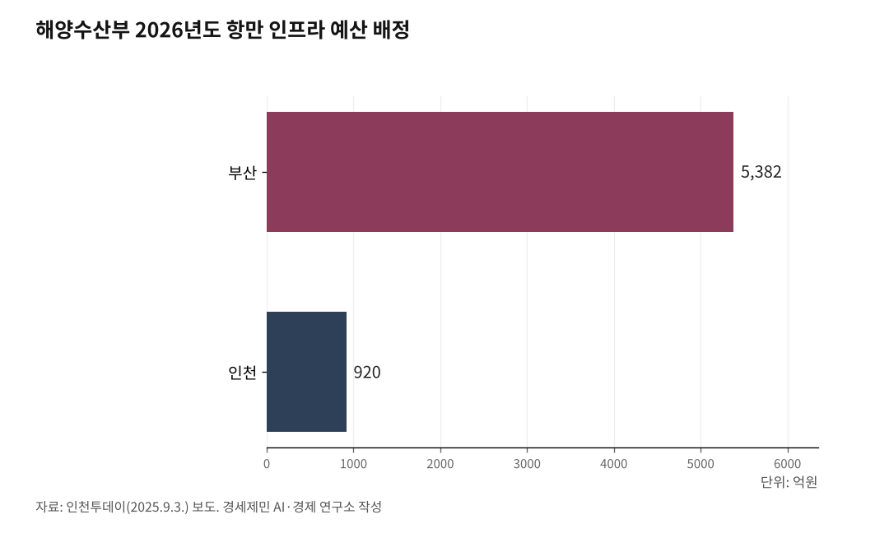

[인천 해양산업, 생존의 기로⑲] 해수부, 인천 응답 '균형 네트워크' 용역 발주…과업 4에 지방해수청 조직 개편 포함
부산 이전 4개월 만에 '지역 밀착·전국 균형' 연구 착수
인천연구원 1월 보고·황종우 장관 4월 방문 뒤 공고
과업 4 소속기관 조직·기능 적정성 검토 조항 주목
인천해수청 수도권 본부 격상·Sea-Air-Rail 의제 선점 과제
1. 해수부, 균형 네트워크 구축 용역 발주
해양수산부가 2026년 4월 20일 '부산 이전에 따른 지역 밀착 및 전국 균형 네트워크 구축 전략 연구용역'을 긴급 발주했다. 해양수산부 공고 제2026-854호, 나라장터 입찰공고번호 R26BK01475940-000이다. 사업금액 7000만원(부가가치세 포함), 사업기간 계약일부터 6개월, 제안서 마감은 5월 4일이다.

용역 내용은 5개 과업으로 구성됐다. 부산 이전에 따른 대내외 정책 환경 변화 분석, 전문가 의견 수렴, 부산시·동남권 지자체와 유기적 협력체계 구축 방안, 전국 해양수산 네트워크 유지·강화 전략, 예산·인사·조직 등 행정 분야별 업무 효율성 제고 방안이다. 과업지시서는 "부산 이전의 정책 효과를 극대화하고, 전국 네트워크 약화 등 부작용을 극복할 대안을 검토한다"고 명시했다.

2. 인천 문제 제기에 해수부가 응답
이번 용역은 인천을 비롯한 타 권역이 꾸준히 제기한 문제에 해수부가 공식 응답한 결과라는 평가가 나온다.
인천연구원은 2026년 1월 30일 '해수부 부산 이전에 따른 영향 및 대응 방안' 보고서에서 해수부 부산 이전으로 수도권 관문항이자 대중국 교역 핵심 거점인 인천항의 전략적 중요성이 간과될 수 있다고 지적했다. 수도권에 밀집된 해양·항만 기업의 행정 수요와 황해권의 전략적 가치를 고려해 인천해양수산청을 실질적 예산 편성권과 정책 결정권을 지닌 '수도권 본부' 수준으로 격상해야 한다고 제안했다.
인천투데이 2025년 9월 3일 보도를 보면, 해수부 2026년도 항만 인프라 확충 예산 1조6600억원 가운데 부산지역이 5382억원, 인천지역이 920억원으로 6배 가까운 격차를 보였다. 부산은 진해신항 확충 4622억원을 비롯해 부산신항 1단계 322억원, 부산항 시설 확충 83억원이 반영됐다. 인천은 인천신항 203억원, 인천남항 197억원, 인천북항 135억원 등 지속사업 중심이다. 시사저널 2025년 7월 25일 보도를 보면, 국회 예산정책처가 국민의힘 김상훈 의원실에 제출한 자료에서 해수부 부산 이전 총비용은 1673억원으로 추산됐다.
황종우 해수부 장관은 2026년 4월 14일 인천 중구 인천종합어시장을 방문해 "동남권을 해양 수도권으로 육성한다는 것이 다른 지역을 소외시킨다는 개념은 전혀 아니다"라며 지역 균형을 강조했다. 그리고 6일 뒤인 4월 20일 이번 용역이 긴급 공고됐다.
3. 과업 4, 지방해수청 조직·기능 적정성 검토 포함
용역의 5개 과업 가운데 인천이 주목해야 할 조항은 과업 4 '전국 해양수산 네트워크 유지·강화 전략'이다.
과업지시서는 "부산 이전에 따라 권역별 정책 편중 및 해양수산 현장 네트워크 약화 가능성을 정책 분야별로 진단"하고 "전국 네트워크 유지·강화 측면에서 소속기관의 조직, 기능과 권한의 적정성 여부를 검토하고 구체적 개선 방안을 제시"하도록 요구했다.
여기서 '소속기관'에는 전국 11개 지방해양수산청이 포함된다. 인천·부산·울산·평택·여수·마산·동해·군산·목포·포항·제주다. 이 조항은 인천연구원이 1월 보고서에서 제안한 '인천해수청 수도권 본부 격상'이 용역 과업에 제도적으로 편입될 통로를 열어둔 셈이다.
우승범 인하대 해양과학과 교수는 2026년 4월 21일 인천일보 인터뷰에서 "예산도 사람도 다 부산으로 향하고 있고, 편중은 더 가속화될 것"이라며 "지역 균형 관점에서 분명히 봐야 할 핵심 키워드는 '산업 육성'"이라고 말했다. 이어 "지역별로 집중해야 할 시장이 다른데, 인천은 해상풍력이라든지 해양 바이오, 대중국 문제 등 측면에서 타 지역보다 차별화된다"고 강조했다.
4. 인천이 선점해야 할 의제들
이번 용역은 인천이 그동안 축적한 해양 의제를 공식 정책 논의에 올릴 기회가 될 수 있다. 선점해야 할 과제는 네 갈래로 정리된다.
첫째, 인천해수청의 수도권 본부 격상이다. 경인경제권 2600만명의 해양·항만 행정 수요를 실질적 예산 편성권과 정책 결정권을 가진 기관이 담당해야 한다는 논리다.
둘째, 경인경제권 해양 거점 조성이다. 경인경제권에는 KMI(Korea Maritime Institute, 한국해양수산개발원), KIOST(Korea Institute of Ocean Science and Technology, 한국해양과학기술원), KOBC(Korea Ocean Business Corporation, 한국해양진흥공사) 등 해양 핵심 공공기관이 전무하다. 인천연구원은 KIMST(Korea Institute of Marine Science and Technology Promotion, 해양수산과학기술진흥원)이나 KOMSA(Korea Maritime Transportation Safety Authority, 한국해양교통안전공단) 본부 이전, 해수부 산하 수도권 통합센터 유치를 제안한 바 있다.
셋째, Sea-Air-Rail(해운·항공·철도 복합물류) 체계 구축이다. 인천은 인천항과 인천국제공항을 보유한 국내 유일의 Sea-Air 복합물류 거점이다. 여기에 인천신항 철도 인입선과 한중 열차페리가 연결되면 부산항 경유 중동·지중해 우회 항로 대비 시간을 대폭 단축하는 Sea-Air-Rail 3모드 물류망이 완성된다. 부산이 갖추지 못한 인천만의 독보적 강점이다.
넷째, 해상풍력 6.2GW(기가와트, 원전 약 6기 분량 발전용량) 배후항만과 서해 해양생태 거점화다. 인천 앞바다에는 영흥 2.2GW, 덕적 2.0GW, 옹진 2.0GW 등 총 6.2GW 해상풍력 사업이 추진 중이다. 192개 섬의 해양생태 자원과 블루카본 연구 기반도 인천의 자산이다.
인천은 2026년 3월 9일 '인천 해양수산 산·학·연 거점 조성을 위한 타당성 검토 및 기본계획 수립 용역'을 완료하고 경인경제권 해양 거점 조성 방안을 이미 체계화했다. 이번 해수부 용역이 향후 6개월간 진행되는 만큼 인천의 축적된 의제가 정책화될 수 있도록 시민사회, 학계, 산업계의 지속적 관심과 대응이 필요한 시점이다.
※ 이 기사는 AI 프로그램 클로드를 활용해 작성했습니다.
참고문헌
·해양수산부(2026), "해양수산부 부산 이전에 따른 지역 밀착 및 전국 균형 네트워크 구축 전략 연구(긴급공고)", 해양수산부 공고 제2026-854호, 나라장터 입찰공고번호 R26BK01475940-000, 2026년 4월 20일. https://www.g2b.go.kr
·해양수산부(2026), 『부산 이전에 따른 지역 밀착 및 전국 균형 네트워크 구축 전략 연구용역 과업지시서』, 해양수산부 혁신행정담당관, 2026년 4월. 온라인 URL 없음.
·변성원(2026), "해수부 부산 이전 '인천항 중요 간과'…'해수청, 수도권 본부 격상을' 제안", 『인천일보』, 2026년 1월 30일. 온라인 URL 없음.
·정혜리(2026), "해수부 부산행에 쏠림 우려…균형 해법 찾기", 『인천일보』, 2026년 4월 21일 9면. 온라인 URL 없음.
·이종선(2025), "부산항 5400억 vs 인천항 920억…'해수부 이전' 예산 쏠림 심각", 『인천투데이』, 2025년 9월 3일. https://www.incheontoday.com/news/articleView.html?idxno=307720
·시사저널(2025), "[단독] 해수장관은 '200억' 예상했는데…해수부 부산 이전에 '최소 1673억' 추산", 『시사저널』, 2025년 7월 25일. https://www.sisajournal.com/news/articleView.html?idxno=341004
·인천광역시·인하대학교 경기인천씨그랜트센터(2026), 『인천 해양수산 산·학·연 거점 조성을 위한 타당성 검토 및 기본계획 수립 용역 최종보고서(V15)』, 인천광역시 섬해양정책과, 2026년 3월 9일. 온라인 URL 없음.
#인천해양산업생존의기로 #해수부부산이전 #균형네트워크용역 #인천해양수산청격상 #지방해양수산청 #경인경제권해양거점 #SeaAirRail #해상풍력배후항만 #황종우해수부장관 #우승범인하대교수 #인천연구원 #해양분권